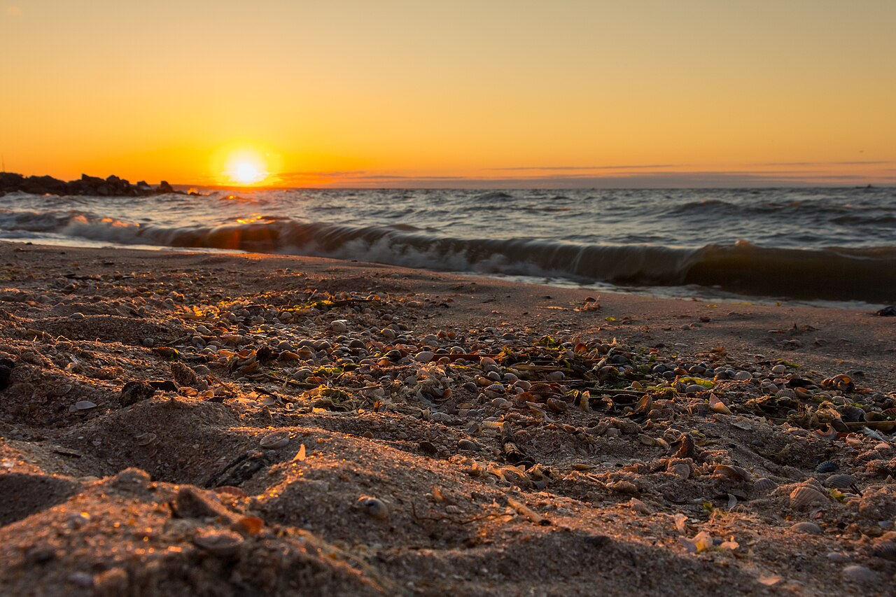
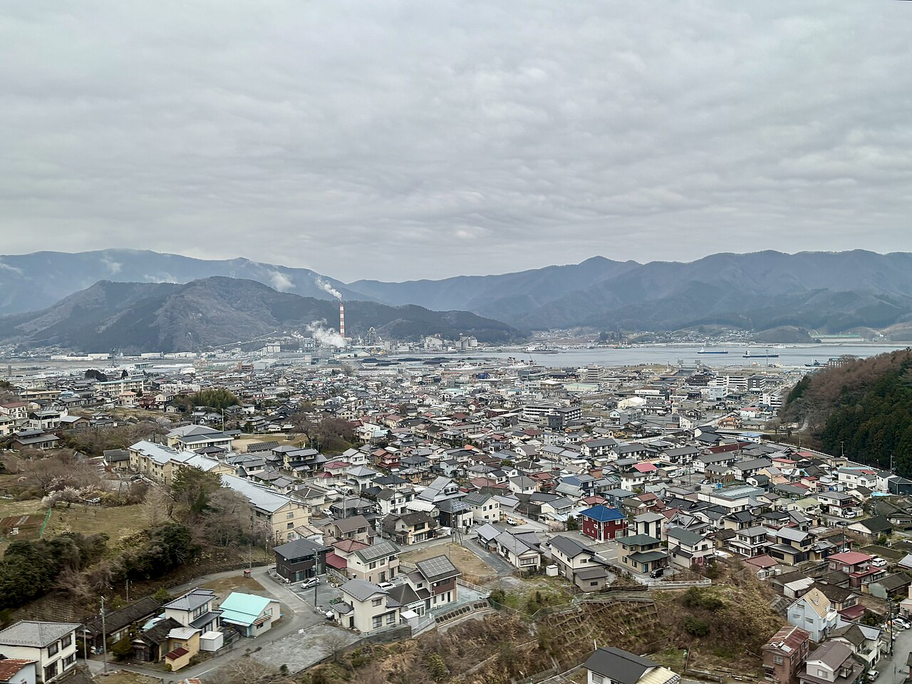
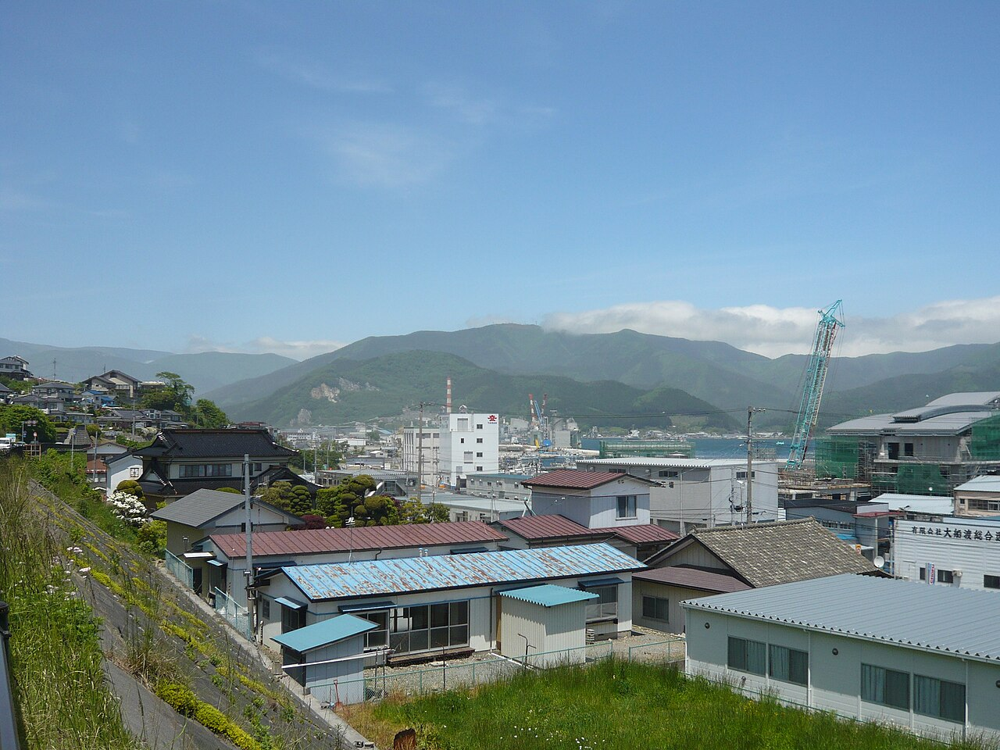
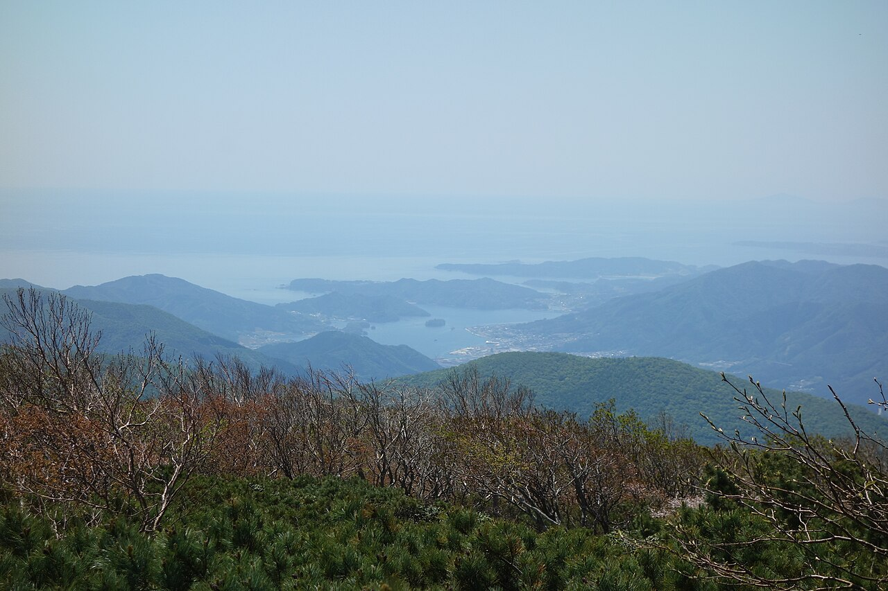

大船渡市赤崎町(三陸沿岸)のカフェ。
魔女の窯
岩手県大船渡市赤崎町諏訪前39-20
三陸沿岸、大船渡市赤崎町にあるカフェです。詳しいご案内は準備中のため、お電話またはInstagramでご確認ください。

このサイトの色は、三陸の夜明けをイメージして制作側で選びました。
お店の理念や店名の意味を示すものではありません。
ご案内
お店のこと
お店の基本情報をまとめています。詳しい内容は準備中です。
お店についてメニュー
メニューの内容と価格は準備中です。お問い合わせください。
メニュー行き方
住所と地図をご案内しています。
アクセス三陸の風景(イメージ)
以下の写真はすべてイメージです。お店の実写ではありません。



掲載写真はフリー素材(一部は撮影地が異なります)であり、お店の実写ではありません。
営業のご案内
- 営業時間
- 準備中(お問い合わせください)
- 定休日
- 準備中(お問い合わせください)
最新の情報は、お電話またはInstagramでご確認ください。